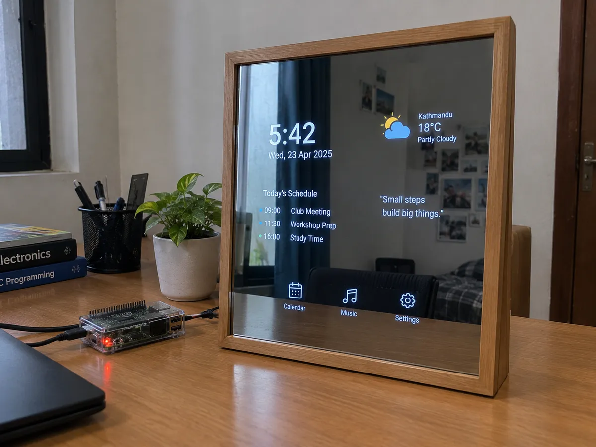
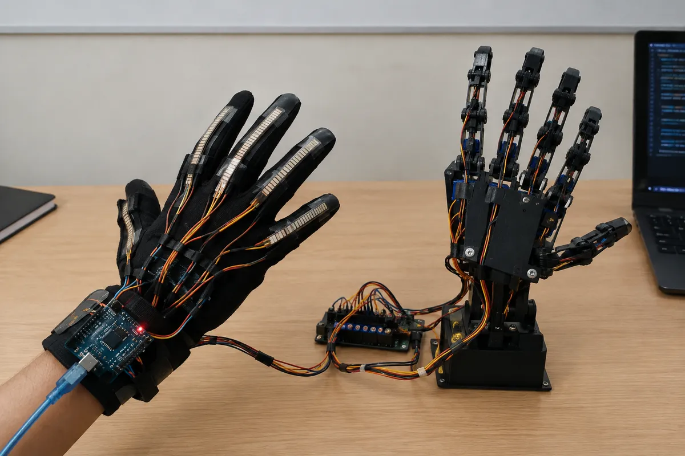

Raspberry Pi Smart Mirror
- Problem
- Checking the time, weather, calendar, and other daily information often requires switching between multiple devices.
- Built with
- Raspberry Pi, display, two-way mirror, Python
Case studies of what club members have built: the problem, the parts, the challenges, and the result.


To supply: more projects over time. Copy templates/project-template.txt for each one and add it to sitemap.xml.